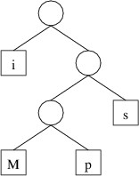

In this section, we’ll consider an application of min-priority queues to the general problem of compressing files. Consider, for example, a plain text file like this copy of the U. S. Constitution. This file is encoded using UTF-8, the most common encoding for plain text files. The characters most commonly appearing in English-language text files are each encoded as one byte (i.e., eight bits) using this scheme. For example, in the text file referenced above, every character is encoded as a single byte (the first three bytes of the file are an optional code indicating that it is encoded in UTF-8 format). Furthermore, some byte values occur much more frequently than others. For example, the encoding of the blank character occurs over 6000 times, whereas the encoding of ‘$’ occurs only once, and the encoding of ‘=’ doesn’t occur at all.
One of the techniques used by most file compression schemes is to find a variable-width encoding scheme for the file. Such a scheme uses fewer bits to encode commonly-occurring byte values and more bits to encode rarely-occurring byte values. Byte values that do not occur at all in the file are not given an encoding.
Consider, for example, a file containing the single string, “Mississippi”, with no control characters signaling the end of the line. If we were to use one byte for each character, as UTF-8 would do, we would need 11 bytes (or 88 bits). However, we could encode the characters in binary as follows:
Obviously because each character is encoded with fewer than 8 bits, this will give us a shorter encoding. However, because ‘i’ and ’s', which each occur four times in the string, are given shorter encodings than ‘M’ and ‘p’, which occur a total of three times combined, the number of bits is further reduced. The encoded string is
100011110111101011010
which is only 21 bits, or less than 3 bytes.
In constructing such an encoding scheme, it is important that the encoded string can be decoded unambiguously. For example, it would appear that the following scheme might be even better:
This scheme produces the following encoding:
01011011010100
which is only 14 bits, or less than 2 bytes. However, when we try to decode it, we immediately run into problems. Is the first 0 an ‘i’ or the first bit of an ‘M’? We could decode this string as “isMsMsMisii”, or a number of other possible strings.
The first encoding above, however, has only one decoding, “Mississippi”. The reason for this is that this encoding is based on the following binary tree:

To get the encoding for a character, we trace the path to that character from the root, and record a 0 each time we go left and a 1 each time we go right. Thus, because the path to ‘M’ is right, left, left, we have an encoding of 100. To decode, we simply use the encoding to trace out a path in the tree, and when we reach a character (or more generally, a byte value), we record that value. If we form the tree such that each node has either two empty children or two nonempty children, then when tracing out a path, we will always either have a choice of two alternatives or be at a leaf storing a byte value. The decoding will therefore be unambiguous. Such a tree that gives an encoding whose length is minimized over all such encodings is called a Huffman tree.
Before we can find a Huffman tree for a file, we need to determine how
many times each byte value occurs. There are 256 different byte values
possible; hence we will need an array of 256 elements to keep track of
the number of occurrences of each. Because files can be large, this
array should be a long[ ]. We can then use element i of this
array to keep track of the number of occurrences of byte value i.
Thus, after constructing this array, we can read the file one byte at a
time as described in “Other File
I/O”, and for each
byte b that we read, we increment the value at location b of the
array.
Having built this frequency table, we can now use it to build a Huffman tree. We will build this tree from the bottom up, storing subtrees in a min-priority queue. The priority of each subtree will be the total number of occurrences of all the byte values stored in its leaves. We begin by building a 1-node tree from each nonzero value in the frequency table. As we iterate through the frequency table, if we find that location i is nonzero, we construct a node containing i and add that node to the min-priority queue. The priority we use when adding the node is the number of occurrences of i, which is simply the value at location i of the frequency table.
Once the min-priority queue has been loaded with the leaves, can begin combining subtrees into larger trees. We will need to handle as a special case an empty min-priority queue, which can result only from an empty input file. In this case, there is no Huffman tree, as there are no byte values that need to be encoded. Otherwise, as long as the min-priority queue has more than one element, we:
Because each iteration removes two elements from the min-priority queue and adds one, eventually the min-priority queue will contain only one element. It can be shown that this last remaining element is a Huffman tree for the file.
Most file compression schemes involve more than just converting to a Huffman-tree encoding. Furthermore, even if this is the only technique used, simply writing the encoded data is insufficient to compress the file, as the Huffman tree is needed to decompress it. Therefore, some representation of the Huffman tree must also be written. In addition, a few extra bits may be needed to reach a byte boundary. Because of this, the length of the decompressed file is also needed for decompression so that the extra bits are not interpreted as part of the encoded data. Due to this additional output, compressing a short file will likely result in a longer file than the original.